Home
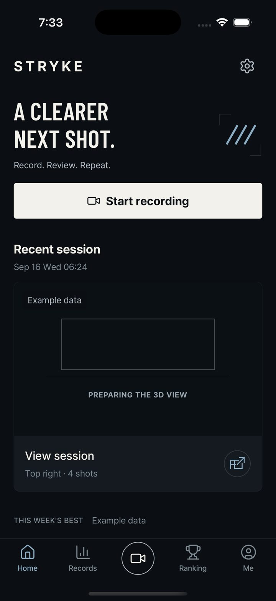

Native iOS simulator captures (iPhone 17 Pro), 17 September 2026 (rev 5: ranking list redrawn, byte-level upload bar), branch vxbrandon/dev-2026-09-17-2. Every player, similarity figure and shot map on these screens is example data and is marked as such on the screen itself.
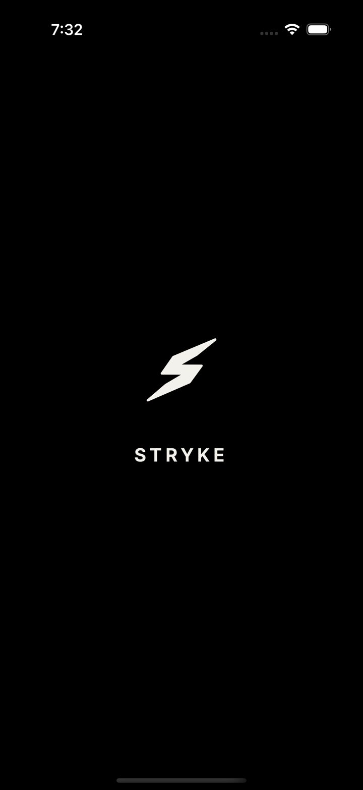
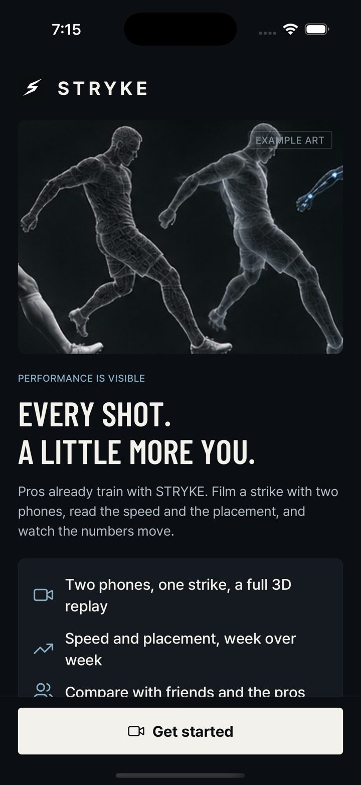

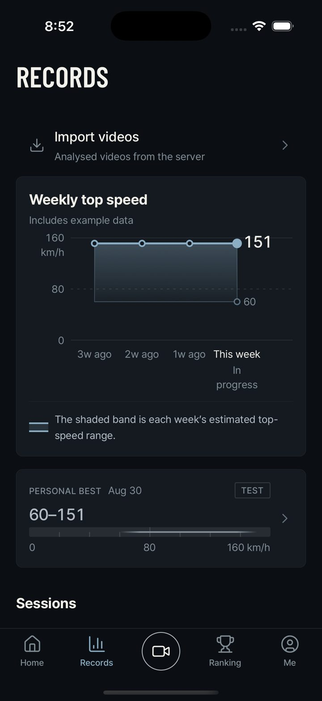
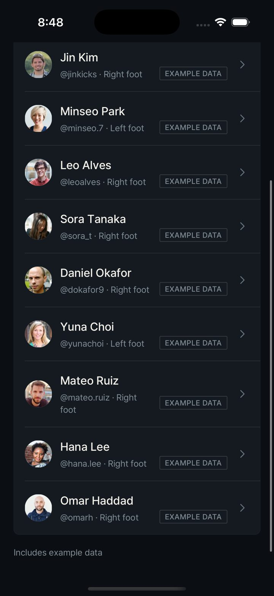
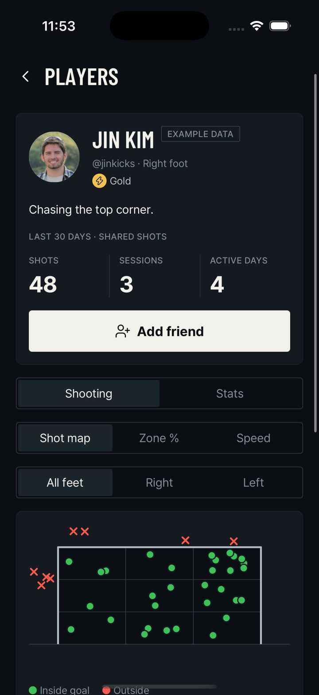
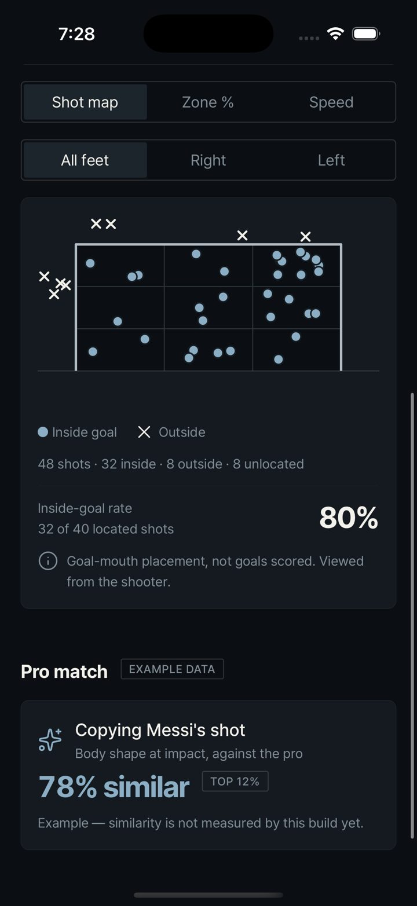
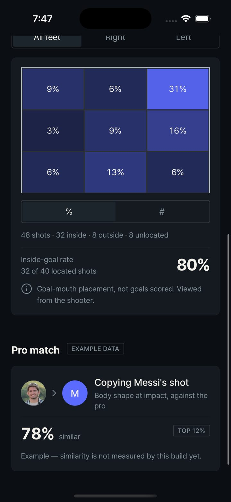
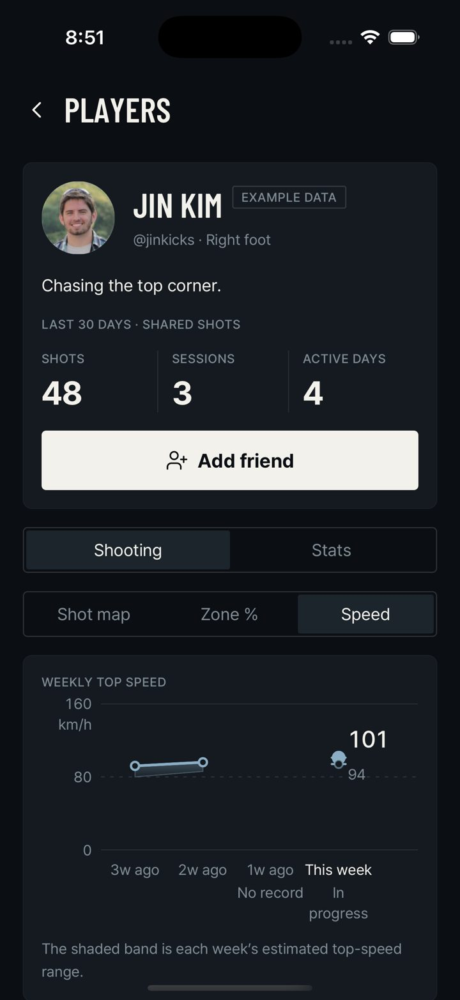
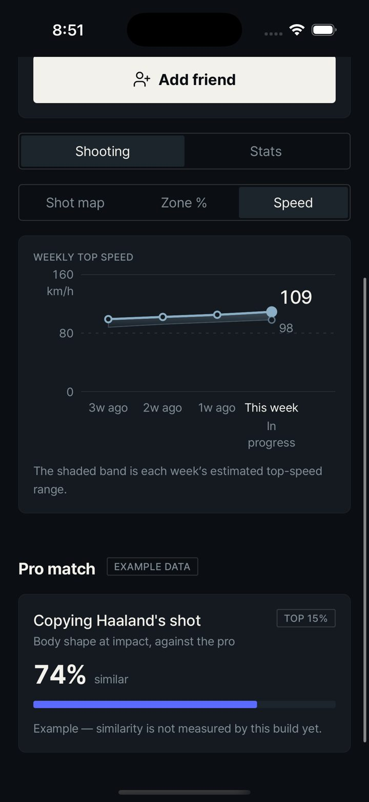
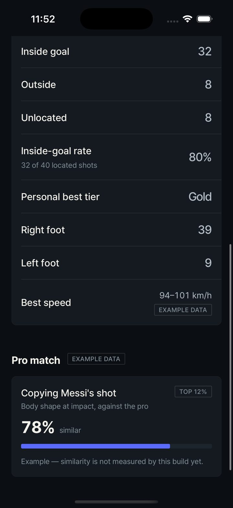
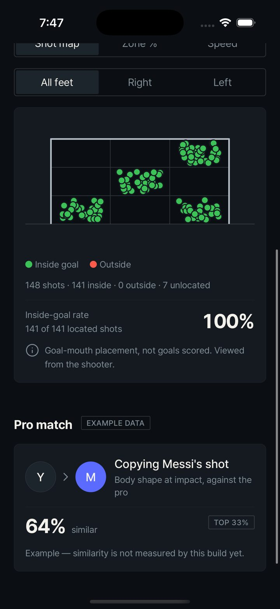
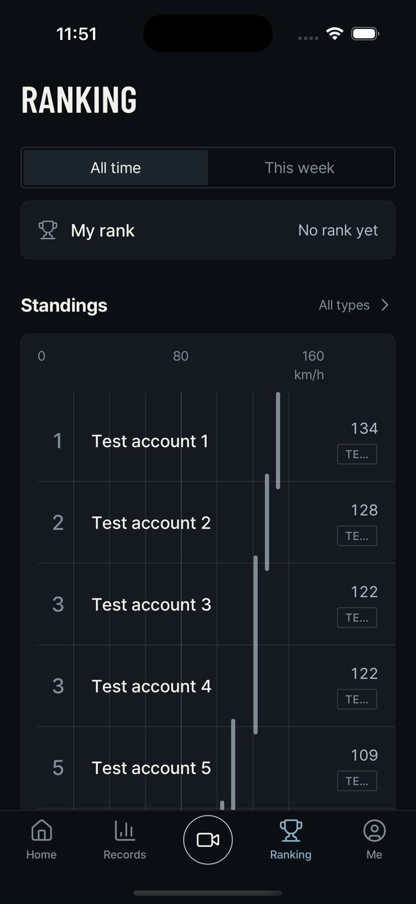